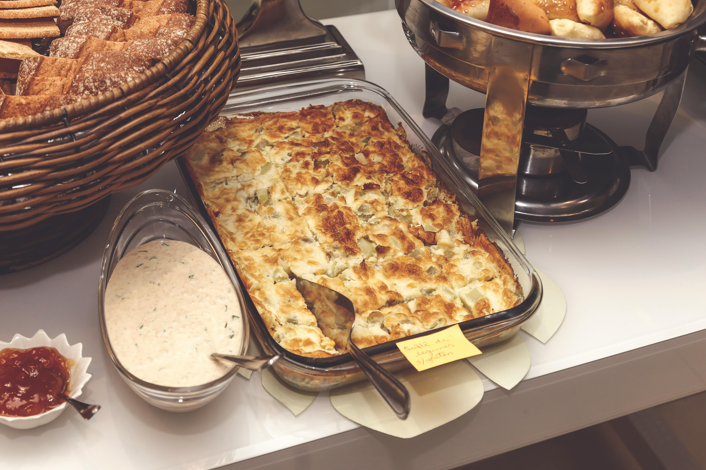

Lasagna

Description
Lasagna is a classic Italian dish made with layers of pasta, cheese, and a rich meat or vegetable sauce. It's hearty, comforting, and perfect for feeding a crowd.
This recipe combines traditional flavors with a simple preparation method, making it a favorite for family dinners or special occasions.
Ingredients
- 9 lasagna noodles
- 2 cups ricotta cheese
- 3 cups shredded mozzarella cheese
- 1 cup grated Parmesan cheese
- 1 lb ground beef or sausage
- 2 cups marinara sauce
- 1 egg
- Salt and pepper to taste
- Fresh basil for garnish (optional)
Steps
- Preheat your oven to 375°F (190°C).
- Cook the lasagna noodles according to the package instructions. Drain and set aside.
- In a skillet, cook the ground beef or sausage over medium heat until browned. Drain excess fat.
- Add marinara sauce to the meat and simmer for 5 minutes.
- In a bowl, mix ricotta cheese, egg, salt, and pepper until well combined.
- In a baking dish, spread a layer of the meat sauce, followed by a layer of noodles, then a layer of the ricotta mixture. Repeat the layers, finishing with meat sauce on top.
- Sprinkle mozzarella and Parmesan cheese on top.
- Bake in the preheated oven for 30-40 minutes until the cheese is melted and bubbly.
- Let it cool for 10 minutes before slicing. Garnish with fresh basil if desired.